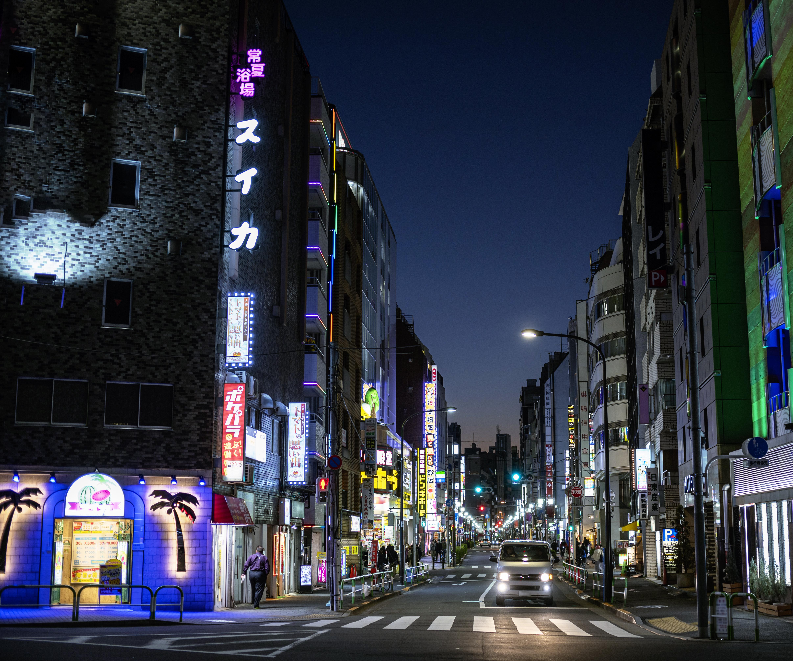

Objevte krásy Japonska
Proč Japonsko?
Japonsko je země, kde se setkává tradice s modernou. Od majestátních hor a klidných svatyní po rušné ulice a futuristické technologie – každý si zde najde něco, co ho okouzlí.
Top 3 města k návštěvě
| Město | Zajímavost |
|---|---|
| Tokio | Mrakodrapy, anime kultura a špičkové sushi. |
| Kjóto | Tradiční chrámy a slavné třešňové květy. |
| Ósaka | Skvělé jídlo a noční život. |
Fotografie z cest


Motivace z Japonska
„I cesta dlouhá tisíc mil začíná prvním krokem.“ – Lao-c’
Krátká video ukázka
Scroll Y: 0